Punk Radio
An underground pirate radio station in the basement of a closed-down coin laundry.
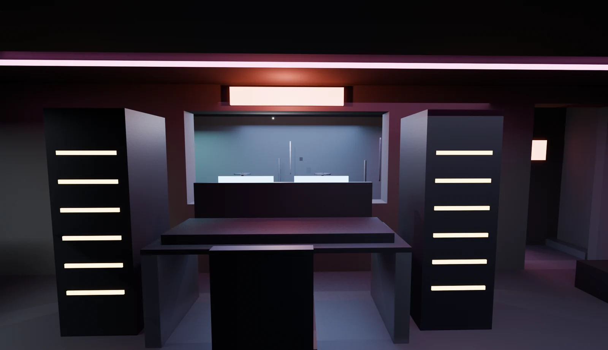
- Space
- 8.0 × 6.5 m · 52 m² · 2.6 m original ceiling
- Programme
- Live broadcast, live sets, equipment repair
- Tools
- AI image generation for the concept reference; Blender for the scene
- Context
- DSC 494 · Weeks 03–04 · Fall 2026 class project
I chose a broadcast station over a recording studio because on air there is no second take. The design grows from one thing I see at work as an assistant engineer at ASU Fusion Studio: a player in an isolation booth has no window to catch the engineer’s eye.
The final scene
Materials and lighting went on only after the layout was approved. Every emissive light marks something: broadcast state, a signal path, or a working position.
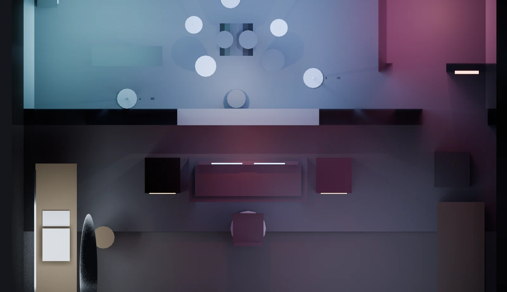
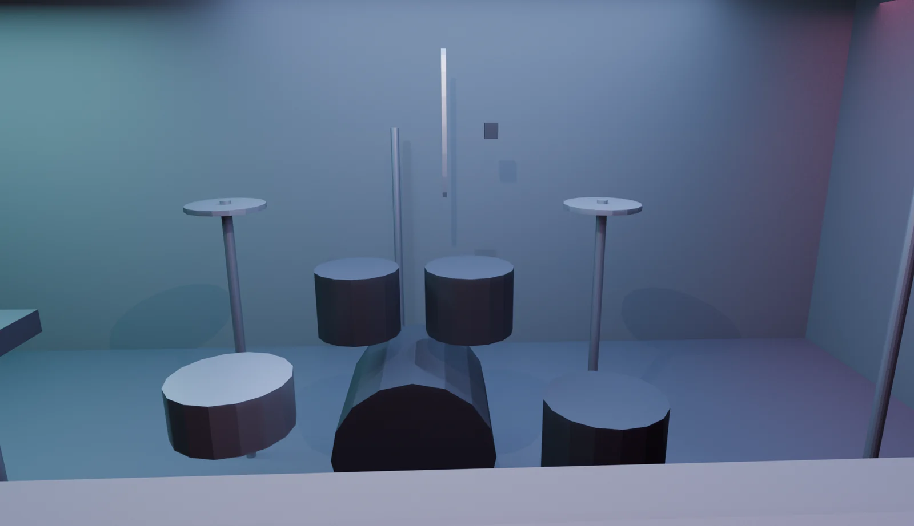
Concept reference
The concept image was generated first and corrected one change at a time. The first edit deleted the cable channel instead of moving it. The second edit had to say twice that the channel must be visible.
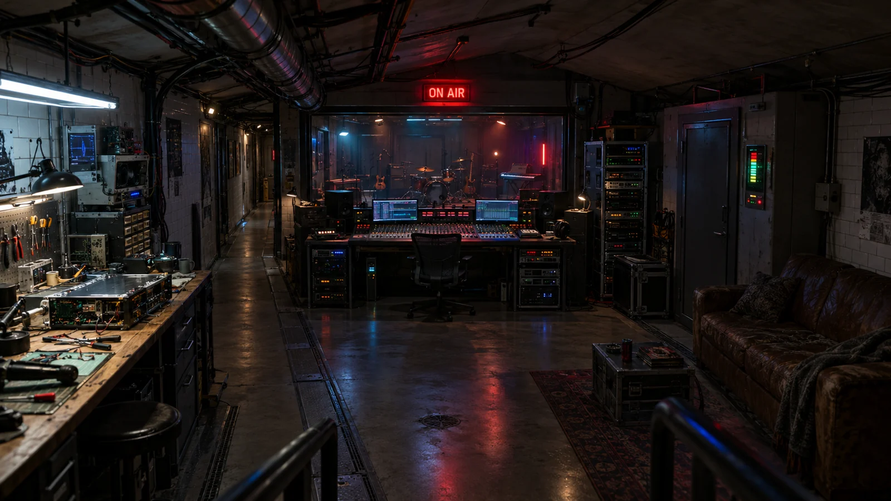
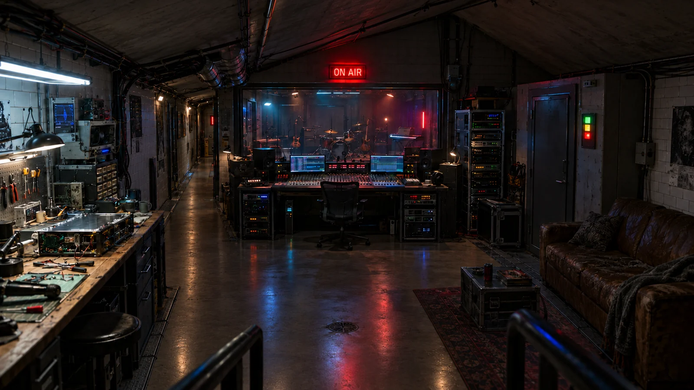
Plan and section
A perspective image cannot describe a whole room. The sloped ceiling failed twice in perspective and resolved in one attempt in section, at 2.4 m over the loud zone and 2.15 m over the quiet one.
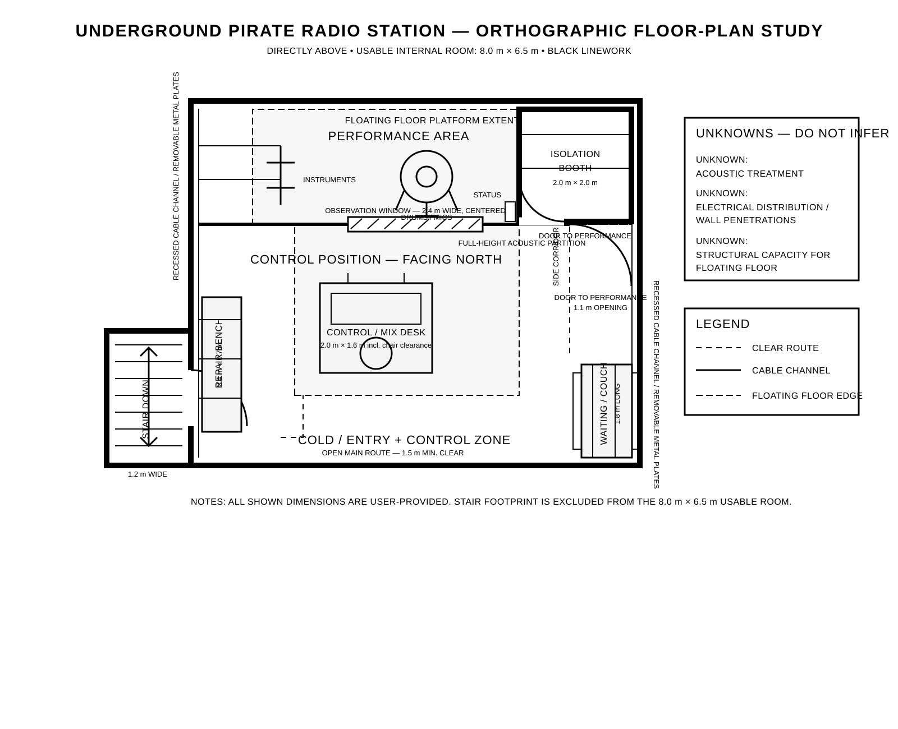
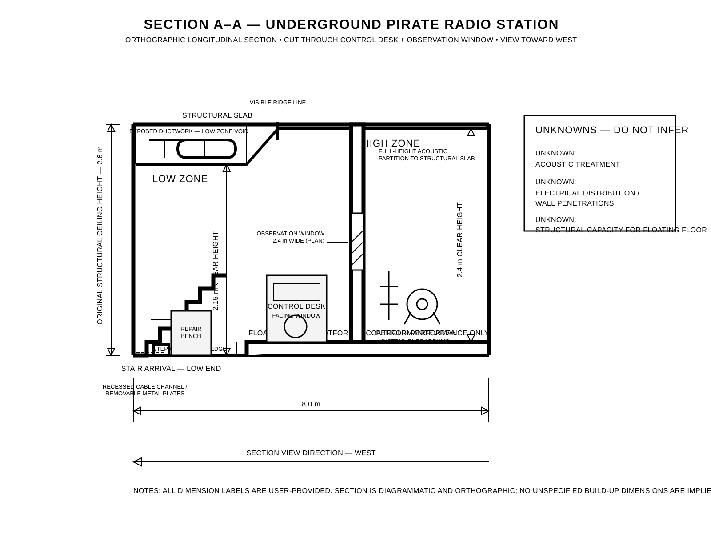
Three review rounds
The same three cameras in every round, so only one thing changes at a time. Three of the eleven revisions came from Round 1, before any furniture existed to hide them.
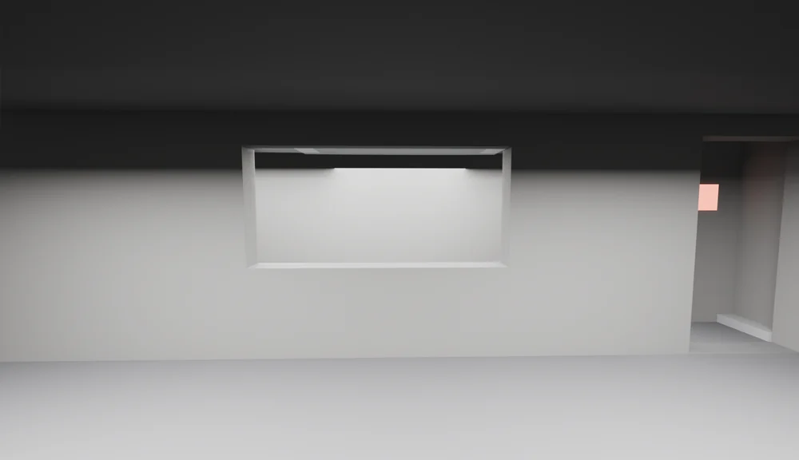
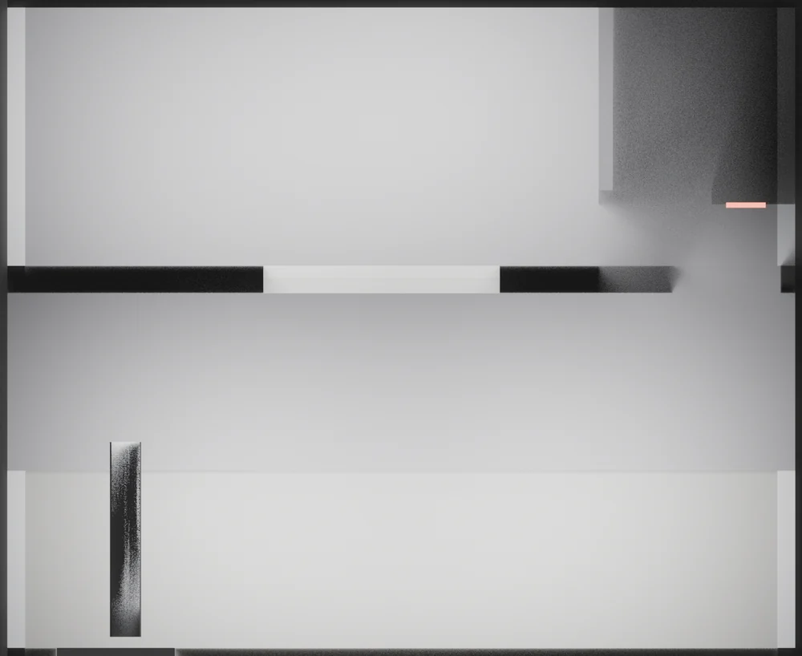
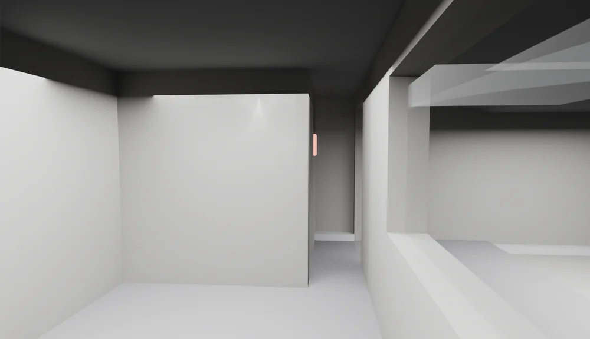
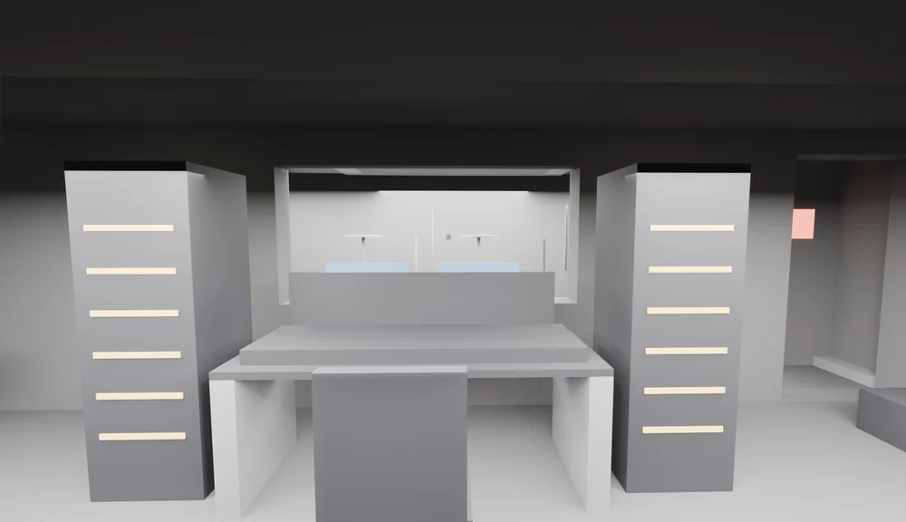
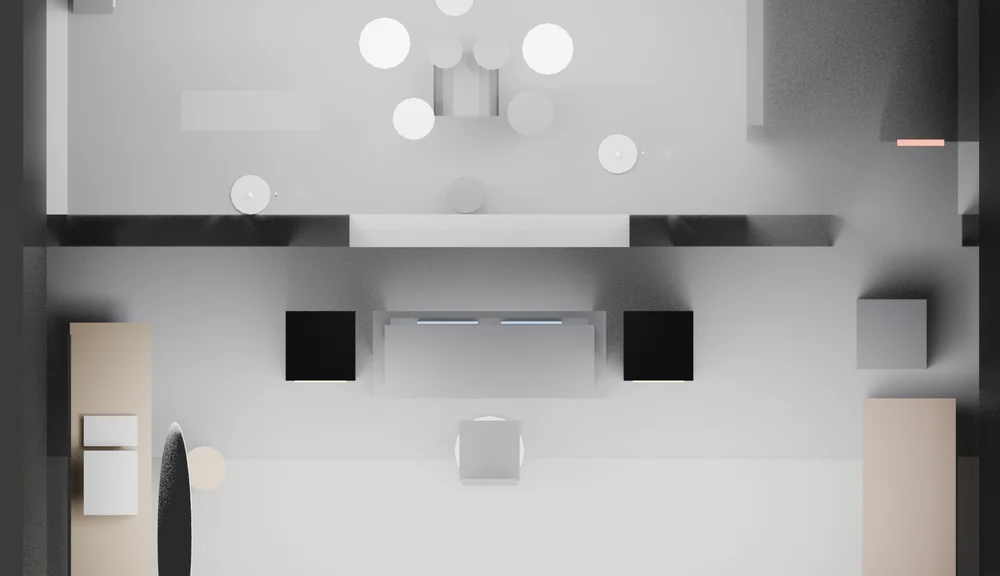
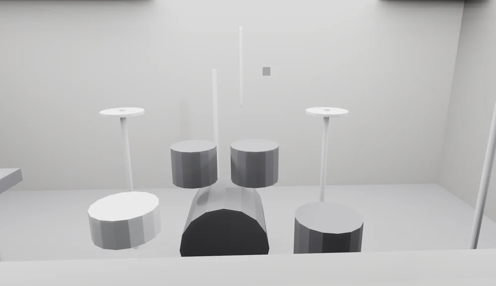
This project stopped at still-image review, so no camera walkthrough was rendered.
Reflection
The worst revisions all had the same shape: every instruction was executed correctly and the result was still wrong, because the thing that mattered was never stated. Knowing the domain made me faster at designing and worse at specifying.